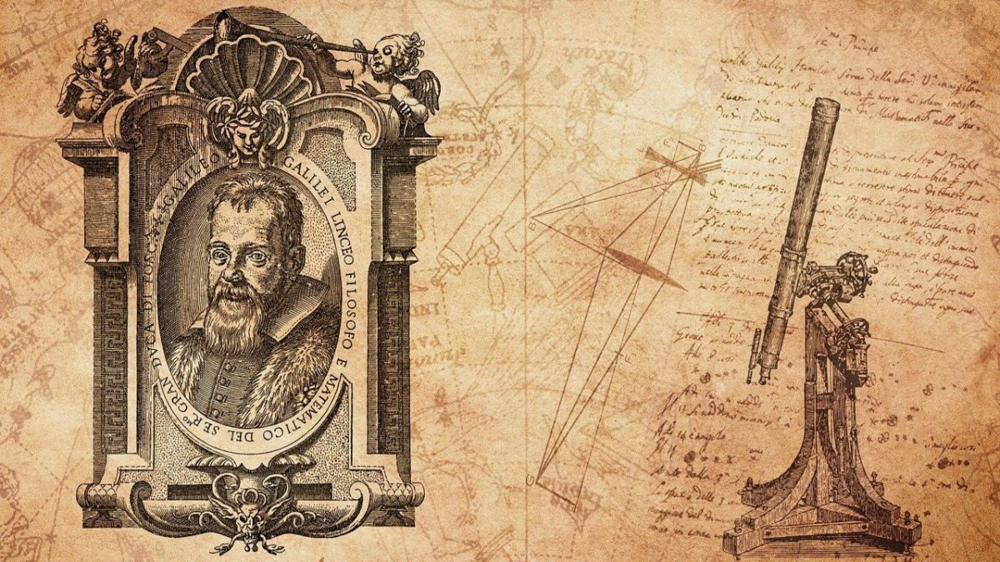

Filosofia Moderna e Contemporânea
Filosofia Moderna
A filosofia moderna começa no século XV quando tem início a Idade Moderna. Ela permanece até o século XVIII, com a chegada da Idade Contemporânea.
Ela marca uma transição do pensamento medieval, fundamentado na fé e nas relações entre os homens e Deus, para o pensamento antropocêntrico, marca da modernidade, que eleva a humanidade a um novo status como o grande objeto de estudo.
Principais Características
Antropocentrismo e Humanismo
Cientificismo
Valorização da natureza
Racionalismo (razão)
Empirismo (experiências)
Liberdade e idealismo
Renascimento e iluminismo
Filosofia laica (não religiosa)
Principais Filósofos Modernos
Nicolau Maquiavel (1469-1527)
Considerado “Pai do Pensamento Político Moderno”, Maquiavel foi filósofo e político italiano do período do Renascimento.
Ele introduziu princípios morais e éticos para a Política. Separou a política da ética, teoria analisada em sua obra mais emblemática “O Príncipe”, publicada postumamente em 1532.
Jean Bodin (1530-1596)
Filósofo e jurista francês, Bodin contribuiu para a evolução do pensamento político moderno. Sua "teoria do direito divino dos reis", foi analisada em sua obra “A República”.
Segundo ele, o poder político estava concentrado numa só figura que representa a imagem de Deus na Terra, baseada nos preceitos da monarquia.
Galileu Galilei (1564-1642)
“Pai da Física e da Ciência Moderna”, Galileu foi um astrônomo, físico e matemático italiano.
Colaborou com diversas descobertas científicas na sua época. Grande parte esteve baseada na teoria heliocêntrica de Nicolau Copérnico (a Terra gira em torno do sol), contrariando assim, os dogmas expostos pela Igreja Católica.
Ademais, foi criador do “método matemático experimental”, o qual está baseado na observação dos fenômenos naturais, experimentações e valorização da matemática.
René Descartes (1596-1650)
Filósofo e matemático francês, Descartes é reconhecido por uma de suas célebres frases: “Penso, logo existo”.
Foi criador do pensamento cartesiano, sistema filosófico que deu origem à Filosofia Moderna. Esse tema foi analisado em sua obra “O Discurso sobre o Método”, um tratado filosófico e matemático, publicado em 1637.
Baruch Espinosa (1632-1677)
Filósofo holandês, Espinosa baseou suas teorias num racionalismo radical. Criticou e combateu as superstições (religiosa, política e filosófica) que, segundo ele, estariam pautadas na imaginação.
A partir disso, o filósofo acreditava na racionalidade de um Deus transcendental e imanente identificado com a natureza, o qual fora analisado em sua obra “Ética”.
Thomas Hobbes (1588-1679)
Filósofo e teórico político inglês, Hobbes buscou analisar as causas e propriedades das coisas, deixando de lado a metafísica (essência do ser).
Baseado nos conceitos do materialismo, mecanicismo e empirismo, desenvolveu sua teoria. Nela, a realidade é explicada pelo corpo (matéria) e por seus movimentos (aliados à matemática).
Sua obra mais emblemática é um tratado político denominado de “Leviatã” (1651), mencionando a teoria do “contrato social” (existência de um soberano).
Filosofia Contemporânea:
As principais características e correntes filosóficas da filosofia contemporânea são:
Marxismo: essa corrente de pensamento surge no contexto das revoluções industriais, tendo Karl Marx e Friedrich Engels como seus grandes expoentes.
Positivismo: Auguste Comte e Émile Durkheim desenvolveram seus métodos científicos baseados em uma tentativa de neutralidade apresentada por essa corrente.
Racionalismo: a valorização do uso da razão passou por um momento importante, tendo como pano de fundo o processo de industrialização. A produção industrial valorizou e necessitou da ciência na busca pelo lucro.
Utilitarismo: corrente de pensamento que avalia a moralidade de determinadas ações baseado nas consequências que ela produz para a sociedade de forma quantitativa.
Pragmatismo;
Cientificismo: valorização do pensamento científico na tomada de decisões, em detrimento do pensamento religioso ou do uso de emoções.
Niilismo: concepção filosófica baseada na impossibilidade da certeza de algo concreto na construção do conhecimento.
Idealismo: corrente filosófica que defende o embate de ideias na construção de pensamento filosóficos.
Liberdade: essa ideia ganhou força com as ideias iluministas, no que tangia questões relacionadas ao pensamento, as crenças religiosas e também a economia.
Existencialismo: corrente filosófica que tem como foco a reflexão sobre questões inerentes a existência humana, como a angústia e a autoimagem.
Fenomenologia: corrente filosófica que analisa os fenômenos como formas de compreender o mundo.
Subjetividade: em contraponto ao Positivismo, que prega uma busca científica pela neutralidade, a subjetividade valoriza o eu dentro do processo racional.
Sistema Hegeliano: método filosófico do idealista Hegel, muito questionado por pensadores posteriores, como Marx.
Materialismo dialético: método de análise social utilizado por Marx e Engels, que defende a existência de um conflito de classes gerando tensões e mudanças nas sociedades ao longo da história.
Principais filósofos contemporâneos
Friedrich Hegel (1770-1831)
Filósofo alemão, Hegel foi um dos maiores expoentes do idealismo cultural alemão, e sua teoria ficou conhecida como “hegeliana”.
Baseou seus estudos na dialética, no saber, na consciência, no espírito, na filosofia e na história.
Já a dialética, segundo ele, seria o movimento real da realidade que teria de ser aplicada no pensamento.
Ludwig Feuerbach (1804-1872)
Filósofo materialista alemão, Feuerbach foi discípulo de Hegel, embora mais tarde, tenha adotado uma postura contrária de seu mestre.
Além de criticar a teoria de Hegel em sua obra “Crítica da Filosofia Hegeliana” (1839), o filósofo criticou a religião e o conceito de Deus. Segundo ele, o conceito de Deus é expresso pela alienação religiosa.
Seu ateísmo filosófico influenciou diversos pensadores dentre eles Karl Marx.
Arthur Schopenhauer (1788-1860)
Filósofo alemão e crítico do pensamento hegeliano, Schopenhauer apresenta sua teoria filosófica baseada na teoria de Kant. Nela, a essência do mundo seria resultado da vontade de viver de cada um.
Karl Marx (1818-1883)
Filósofo alemão e crítico do idealismo hegeliano, Marx é um dos principais pensadores da filosofia contemporânea.
Sua teoria é denominada de "marxista". Ela abrange diversos conceitos como o materialismo histórico e dialético, a luta de classes, os modos de produção, o capital, o trabalho e a alienação.
Ao lado do teórico revolucionário Friedrich Engels, publicaram o “Manifesto Comunista”, em 1948.
Segundo Marx, o modo de produção material da vida condiciona a vida social, política e espiritual dos homens, analisada em sua obra mais emblemática, “O Capital”.